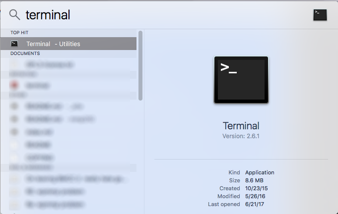

Command line basics
On OSX, the command line is accessed through the Terminal program.

The command line is the only interface that offers the full functionality of Git. Using the command line requires some basic familiarity with Unix and Git commands.

Essential Unix commands
| Command |
Function |
Examples |
| cd <path> |
change directory |
cd ~/Desktop
cd ~/Desktop/my-project
cd .. |
| ls <path> |
list contents of directory |
ls
ls -l
ls /Applications/ |
| mkdir |
make a new directory |
mkdir my-project |
| touch |
create a file |
touch index.html
touch css/style.css |
| rm |
remove a file
note: file does not go to trash.
it's gone forever. |
rm my-project/file.txt |
| cp <path> <path> |
copy a file |
cp ~/Desktop/my-project/css/style.css css/style.css |
| mv |
move a file |
cp ~/Downloads/file.txt my-project/file.txt |
What is Git?
- git-scm website
- Source code management system
- Distributed version control system
- A collaboration tool for developers
- "Version control" means it keeps track of the changes and contributions to a code base or set of files
- "Distributed" means all users have a copy of the code repository
How to use Git
- Git is written to be used on the Linux command line, but because it is free and open source there are tools like GitHub that use interfaces to interact with git.
- Command line requires learning a little Unix but it's typically the best and most efficient way to interact with Git. It's also the only way to access all of Git's features.
- GitHub's web interface allows the user to download, upload and edit code as well as forking and branching.
- GitHub's desktop client is a GUI interface for Git that is a little limited but can be a good place to start for visual learners
Where is Git?
Git is a group of files that are hidden on your computer.

When you create a new Git repository, Git will create a .git folder, which is hidden by default. So you don't have to think about Git when you're looking at your project, but you know it's there. A set of files is referred to as a repo or repository.
Essential Git commands
$ git init
Use git init to initialize a new repository inside the root directory of the repo.

$ git status
Git status prints the current branch, changes staged for commit, changes to be committed, and any merge errors. Use git status liberally.

What files to track
Git is good at tracking and merging line-based text files like .xml, .txt, .js, etc.
Git can track binary like images but it can't merge them. It is a good idea to track files like .png or .psd but you can't merge and see the differences.
Each snapshot that git takes increases the size of the .git folder hidden inside of your repo. It's a good idea to keep the overall size of these files small if possible. If you have cache or other files that are generated by various programs, but aren't necessary to build your project, like Sass cache files.
.gitignore
The .gitignore is a hidden file that can be created in the root directory of your repo to tell git to ignore certain files or directions. This is useful for ignoring cache files that can be regenerated, system files that aren't needed in the repo or any other files that you don't need to share in the repo.
.DS_Store
sass-cache/
documentation/*.mov
add and commit
$ git add <path>
Git add is used to stage files. Git keeps track of any files that are added, modified or deleted in the root directory. In order to commit those changes they must first be staged by adding.
$ git add . // adds all new and modified files
$ git rm <path> // removes files
$ git add -A // includes manually deleted files
$ git add <path> // commit specific file or directory
$ git add index.html
$ git add css/
$ git commit
Commits staged files. Each commit is referred to as a snapshot. Snapshots are given unique identifier strings.
$ git commit -a // includes modifications to tracked files
$ git commit -m "initial commit" // adds commit message as parameter
Viewing history
$ git log
Git log will print previous commits. There are a lot of helpful options for this command. You can modify Git commands with Unix parameters. Parameters are written with one or two dashes and the parameter abbreviation or name. ie: -v or --version. To find the options for a specific command use --help or -h
$ git log -1 // logs most recent commit
$ git log -2 // two most recent commits
$ git log -p // shows difference in commits
More on log: Viewing the Commit History
Git hell
At some point every Git user will enter Git hell. You try to push your new commit but you are told to pull first. You pull. You resolve the merge conflicts and commit. You push. And you're told to pull. There are other versions of Git hell but they usually involve some sort of loop where you can't commit or push your changes.
Don't feel bad and don't freak out! Don't delete your repo and start over!
Don't try random Git commands.
Start on stack overflow and try to describe what happened.
If you can't solve it on your own email me and we'll figure it out.
tk hell drawing